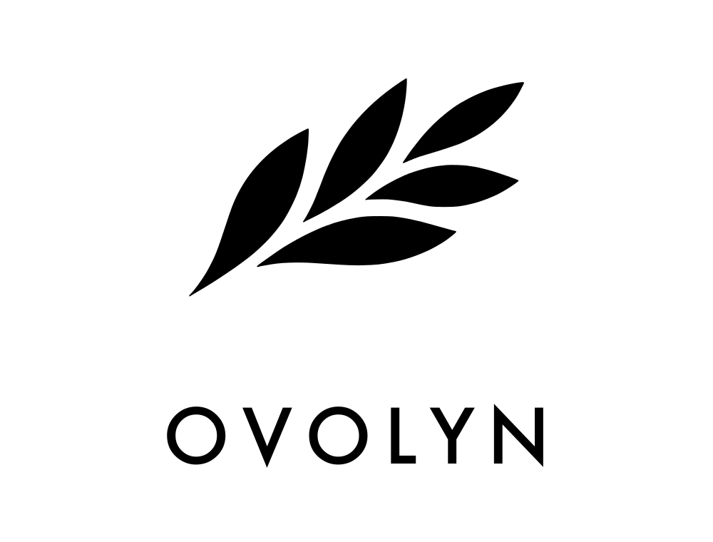

Agent funds sit in raw wallets earning nothing — a treasury that sleeps while the agent works.
A private key is all-or-nothing. No limits, no allowlists, no budgets — one bad decision drains everything.
Gas tokens to babysit, chains to bridge, manual top-ups. Machine-speed commerce on human-speed rails.
Fund an agent account with USDC from any chain.
Idle balances above a threshold sweep into tokenized treasury yield.
A human CFO sets policy: per-tx limits, allowlists, budgets. Out-of-bounds spends are blocked.
The agent pays for services autonomously, within policy, at machine speed.
Every flow is policy-checked. Every movement lands on one auditable balance sheet: revenue in, yield accrued, spend out — gas included, denominated in USDC end to end.
The treasury never touches a volatile asset — one currency for balances, payments and fees.
Machine-speed spending needs machine-speed finality. Our Gateway deposit confirmed instantly.
USDC/EURC treasury rebalancing runs on the only testnet where Circle Swap exists.
Agent Wallets, Gateway, CCTP, USYC — the entire bank is composed from native primitives.
Payments are why the balance exists —
deposits are why the business exists.
A spread on USYC treasury yield generated by idle agent balances.
Policy engine, auditable ledger and treasury automation as the paid product.
Basis points on USDC/EURC rebalancing and cross-chain deposits.
Core metric: TVL held in agent accounts. Neutral infrastructure — every agent marketplace is a channel, not a competitor.
github.com/gdongxi/ovolyn · Tracks: Agentic Economy + DeFi · Solo build on Arc